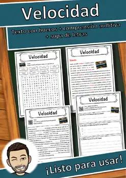
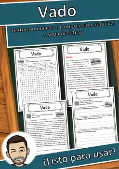
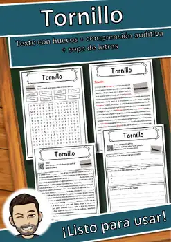
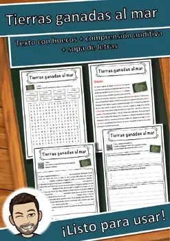
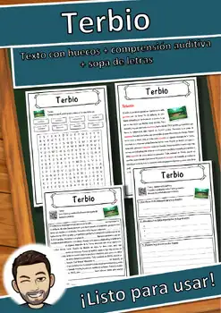
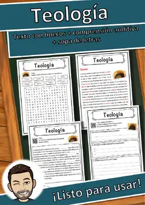
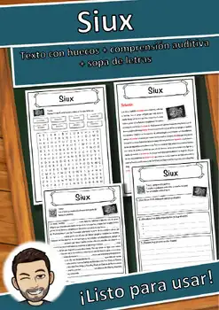
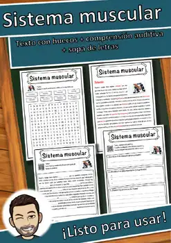

Cultura general
708 recursos de Cultura general en español, sin preparación y con solucionario: fichas de lectura, búsquedas del tesoro y más, filtrables por grado.
708 recursos
Grado

«El taller de velas» – Búsqueda del tesoro de lectura

«El viaje de la papa en la granja» – Búsqueda del tesoro de lectura

«La temporada de calabazas en la granja» – Búsqueda del tesoro de lectura

Wilhelm der Eroberer – Ficha de lectura: texto con huecos, comprensión auditiva y sopa de letras

Watt – Ficha de lectura: texto con huecos, comprensión auditiva y sopa de letras

Velocidad – Ficha de lectura: texto con huecos, comprensión auditiva y sopa de letras
Velo – Ficha de lectura: texto con huecos, comprensión auditiva y sopa de letras

Vado – Ficha de lectura: texto con huecos, comprensión auditiva y sopa de letras

Tornillo – Ficha de lectura: texto con huecos, comprensión auditiva y sopa de letras

Toleranz – Ficha de lectura: texto con huecos, comprensión auditiva y sopa de letras

Tierras ganadas al mar – Ficha de lectura: texto con huecos, comprensión auditiva y sopa de letras

Terbio – Ficha de lectura: texto con huecos, comprensión auditiva y sopa de letras

Teología – Ficha de lectura: texto con huecos, comprensión auditiva y sopa de letras
Temperatura – Ficha de lectura: texto con huecos, comprensión auditiva y sopa de letras

Strand – Ficha de lectura: texto con huecos, comprensión auditiva y sopa de letras

Siux – Ficha de lectura: texto con huecos, comprensión auditiva y sopa de letras

Sistema muscular – Ficha de lectura: texto con huecos, comprensión auditiva y sopa de letras

Voluntariado – Ficha de lectura: texto con huecos, comprensión auditiva y sopa de letras

Vipera berus – Ficha de lectura: texto con huecos, comprensión auditiva y sopa de letras

Vino – Ficha de lectura: texto con huecos, comprensión auditiva y sopa de letras

Vida extraterrestre – Ficha de lectura: texto con huecos, comprensión auditiva y sopa de letras

Risa – Ficha de lectura: texto con huecos, comprensión auditiva y sopa de letras

Peca – Ficha de lectura: texto con huecos, comprensión auditiva y sopa de letras

Organización – Ficha de lectura: texto con huecos, comprensión auditiva y sopa de letras

Onda – Ficha de lectura: texto con huecos, comprensión auditiva y sopa de letras

Níquel – Ficha de lectura: texto con huecos, comprensión auditiva y sopa de letras

Misisipi – Ficha de lectura: texto con huecos, comprensión auditiva y sopa de letras

Mesías – Ficha de lectura: texto con huecos, comprensión auditiva y sopa de letras

Menstruación – Ficha de lectura: texto con huecos, comprensión auditiva y sopa de letras

Maravillas del mundo – Ficha de lectura: texto con huecos, comprensión auditiva y sopa de letras

Magnesio – Ficha de lectura: texto con huecos, comprensión auditiva y sopa de letras

Magia – Ficha de lectura: texto con huecos, comprensión auditiva y sopa de letras

Silesia – Ficha de lectura: texto con huecos, comprensión auditiva y sopa de letras

Lot – Ficha de lectura: texto con huecos, comprensión auditiva y sopa de letras

Libro Guinness de los récords – Ficha de lectura: texto con huecos, comprensión auditiva y sopa de letras

Libra esterlina – Ficha de lectura: texto con huecos, comprensión auditiva y sopa de letras

Lengua de señas – Ficha de lectura: texto con huecos, comprensión auditiva y sopa de letras

Las aventuras de Tintín – Ficha de lectura: texto con huecos, comprensión auditiva y sopa de letras

Juan Calvino – Ficha de lectura: texto con huecos, comprensión auditiva y sopa de letras

Job – Ficha de lectura: texto con huecos, comprensión auditiva y sopa de letras

Jesse James – Ficha de lectura: texto con huecos, comprensión auditiva y sopa de letras

Iroqués – Ficha de lectura: texto con huecos, comprensión auditiva y sopa de letras

Ironía – Ficha de lectura: texto con huecos, comprensión auditiva y sopa de letras

Integración – Ficha de lectura: texto con huecos, comprensión auditiva y sopa de letras

Idioma danés – Ficha de lectura: texto con huecos, comprensión auditiva y sopa de letras

ICE – Ficha de lectura: texto con huecos, comprensión auditiva y sopa de letras

Héroe – Ficha de lectura: texto con huecos, comprensión auditiva y sopa de letras

Hugonotes – Ficha de lectura: texto con huecos, comprensión auditiva y sopa de letras
No se encontraron recursos. Prueba con otra palabra o con otro filtro.